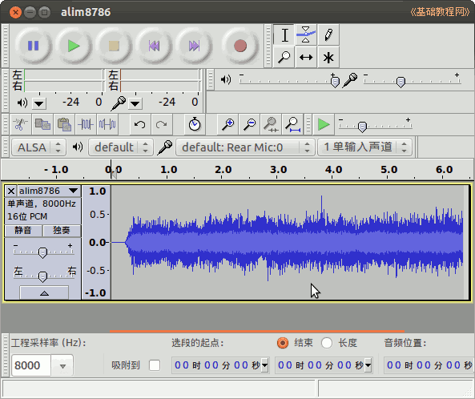
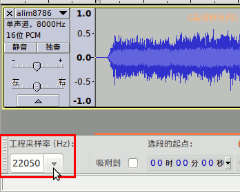
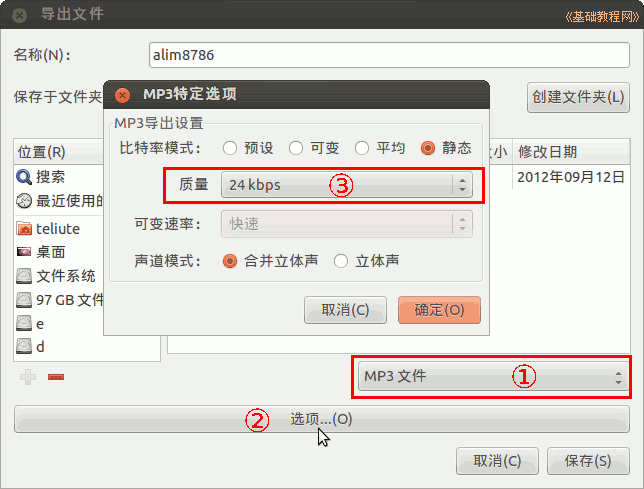
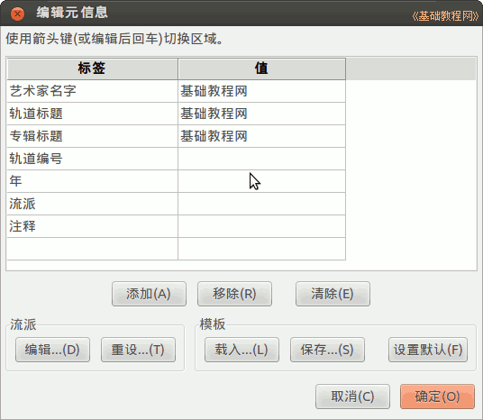

Audacity 音频编辑器教程
作者：TeliuTe 来源：基础教程网
四、格式转换 返回目录 下一课点菜单“文件—导出”命令，可以保存不同类型的文件；
1、格式转换
1）启动 Audacity，点菜单”文件—打开“命令，打开一个音频文件，本课有练习文件(下载)；

2）点窗口左下角的“工程采样率”下拉按钮，选择 22050，CD 音质是 44100，电话是8000；

3）点菜单“文件—导出...”命令，打开一个另存为对话框，在中间打开自己的文件夹；
4）点下边的文件类型下拉列表，选择“Mp3文件“，再点下边的选项按钮，在出来音频选项设置对话框中，设置质量为24K；

5）检查无误后，点右下角的“保存”按钮，出来音乐信息对话框，输入自己的标签信息，点“确定”完成，如果以后还要处理文件，再点菜单“文件－保存”命令保存一下工程；

本节学习了格式转换的基础知识，如果你成功地完成了练习，请继续学习下一课内容；
本教程由86团学校TeliuTe制作|著作权所有
基础教程网：http://teliute.org/
美丽的校园……
转载和引用本站内容，请保留版权信息和本站链接。